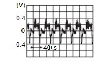

駕駛資訊 & 多媒體 - 音響、視覺 & 導航系統 - 後視監視器 - 故障碼/線路診斷 - 攝影機 IMAGE 訊號線路
診斷程序
N5160402E002Z400ENG
1.
檢查導通性 攝影機 IMAGE 訊號線路
將點火開關關閉。
斷開/拔除影音控制單元線束接頭與後視攝影機線束接頭。
檢查影音控制單元線束接頭與後視攝影機線束接頭之間的導通性。
AV 控制單元
後視攝影機
導通
接頭
端子
接頭
端子
M102
+
1
M124
*
2
49
D504
3
有導通
*
1：配備 Dynamic Sound Yamaha Premium 的車輛
*2
: 配備 Dynamic Sound Yamaha Ultimate 的車輛
檢查 AV 控制單元線束接頭與搭鐵之間的導通性。
AV 控制單元
搭鐵
導通
接頭
端子
M102
*
1
M124
*
2
49
不存在
*
1：配備 Dynamic Sound Yamaha Premium 的車輛
*2
: 配備 Dynamic Sound Yamaha Ultimate 的車輛
檢查結果是否正常？
是
進至 2
.
否
修理或更換線束或接頭。
2.
檢查攝影機 IMAGE 訊號
連接影音控制單元線束接頭與後視攝影機線束接頭。
將點火開關轉至 開啟。
將排檔桿切換至「R」位置。
檢查影音控制單元線束接頭與搭鐵之間的訊號。
(+)
(–)
條件
標準值
參考值
AV 控制單元
接頭
端子
M102
*
1
M124
*
2
49
搭鐵
當攝影機影像有顯示時。
輸入與後視攝影機影像同步的波形。

CF100CCIAA00ENG
*
1：配備 Dynamic Sound Yamaha Premium 的車輛
*2
: 配備 Dynamic Sound Yamaha Ultimate 的車輛
檢查結果是否正常？
是
更換影音控制單元。請參閱
拆卸與安裝
.
否
更換後視攝影機。請參閱
拆卸與安裝
.
已加入書籤
書籤數量過多。
請刪除後重新加入書籤。
×